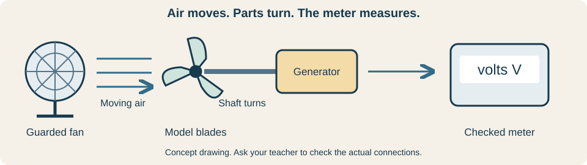
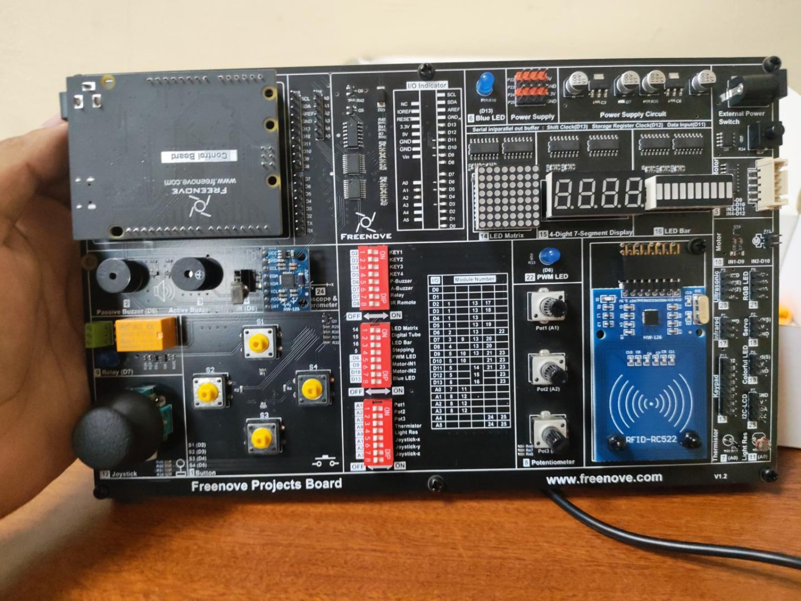
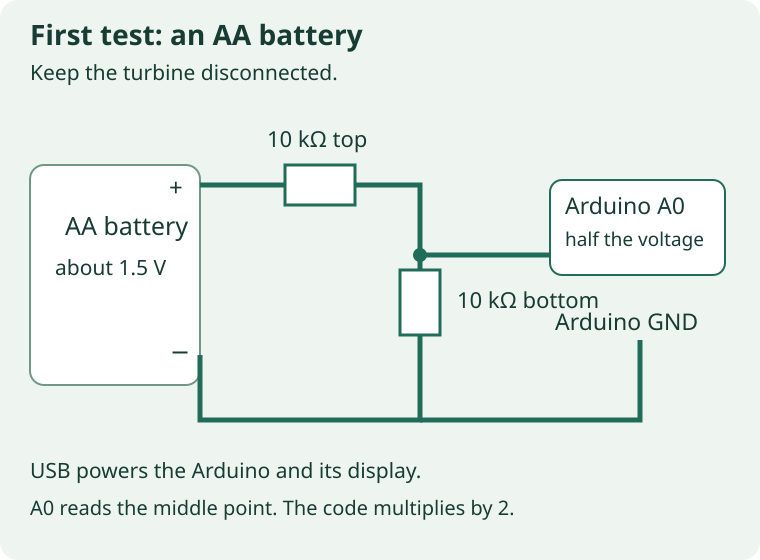
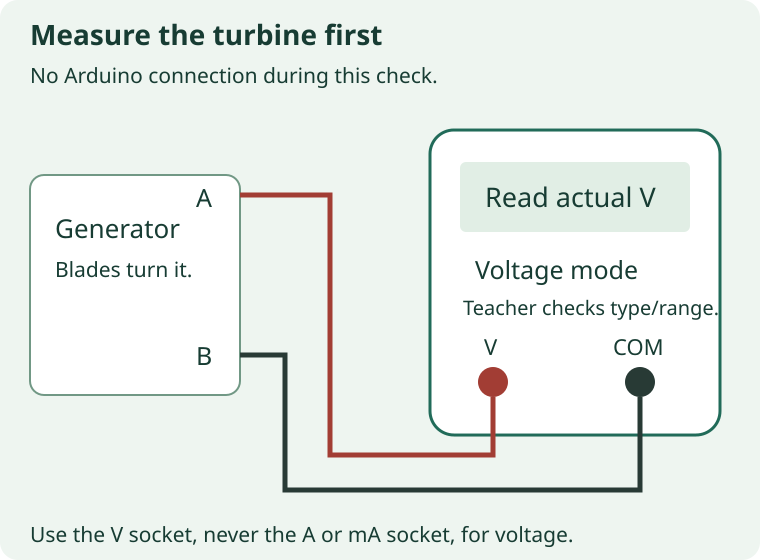
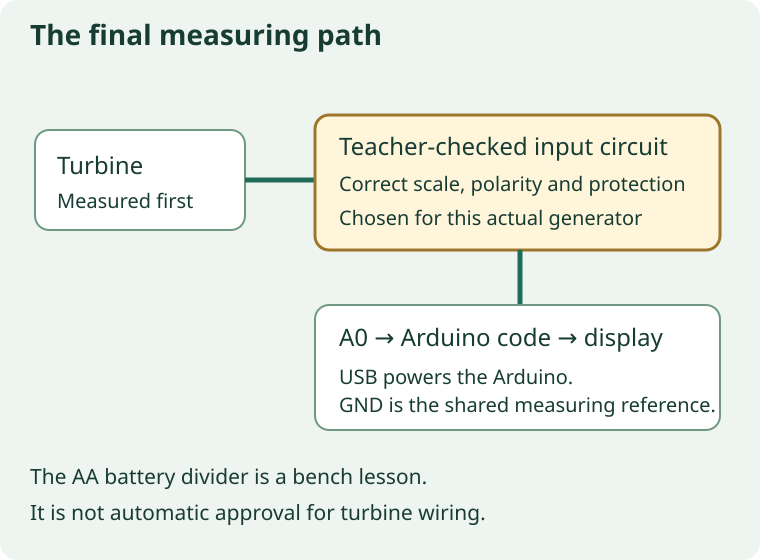

At the wind model
Moving air turns the blades and generator. We will make the board show its voltage, then compare fan-off and fan-on readings. Voltage is electrical push, measured in volts, written V.
Use the already-built wind model. Keep the generator disconnected from the Arduino until its input circuit is checked.
Check: The blades turn the generator. A meter reading in V shows measured voltage; spinning alone does not.
You will build the Arduino voltage program in small sections. Keep the built turbine; this guide does not ask you to rebuild it.

At the Freenove board
The photo shows the Freenove Projects Board V1.2 used for these directions. It does not show the wiring of your turbine prototype. The smaller control board plugs into it.
Find the Freenove Projects Board V1.2, its control board, USB data cable, multimeter, AA holder, breadboard, wires and two 10k resistors.
Check: Your teacher confirms a classic Uno-compatible 5 V control board and checks both 10k resistor values. The turbine stays disconnected.
These directions use the checked 5 V Uno-compatible board. A different processor or supply needs a checked program and input circuit. USB powers the board separately.

At the Freenove board
The number display is already wired inside the board. Some other modules share its pins or A0, so we must turn those modules off.
Disconnect USB and every signal source. Set Digital Tube, module 15, ON. Set all unused modules OFF, including Light Res and Thermistor.
Check: The board is unpowered. Digital Tube is ON, and the two A0 sensor switches are OFF.
Use the printed module names, not an assumed switch direction. Keep LED Matrix, LED Bar, Blue LED, motor and RFID functions OFF. Change switches and wires only with power and signal disconnected.
In Arduino IDE
A USB data cable carries the program from the computer. The board choice must match the actual plugged-in control board.
Connect the USB data cable. In Arduino IDE, select the teacher-confirmed Arduino Uno board and its USB port.
Check: Arduino IDE shows the checked board and a connected port.
If no port appears, have your teacher check the cable. A charge-only cable can power the board without carrying a program.
In Arduino IDE · WindVoltage_Student
A sketch is an Arduino program. You will build this one in short sections, keeping each earlier section as you go.
Choose File → New Sketch. Save it as WindVoltage_Student. Keep the empty setup() and loop() functions.
Check: A saved sketch has one empty setup() and one empty loop(). There is no downloaded complete program.
Keep the generator disconnected. The next pages add code above or inside these two functions. Do not replace the whole editor when adding a section.
In Arduino IDE · WindVoltage_Student
A constant is a named value that stays the same. A0 reads voltage. D11, D13 and D12 talk to the display already on the Freenove board.
Add this section at the very top, above setup(). Keep these pin numbers and the two 10k bench resistor values.
Check: The pin names and measuring constants are above both empty functions.
ADC_REFERENCE_V starts at 5.00 V for the checked 5 V board. INPUT_SCALE is 2 because the equal resistors halve the source voltage. These are bench values; the teacher checks final calibration later.
Add at the top of the sketch, above setup() and loop().
#include <Arduino.h>
const byte LATCH_PIN = 12;
const byte CLOCK_PIN = 13;
const byte DATA_PIN = 11;
const byte VOLTAGE_PIN = A0;
const float ADC_REFERENCE_V = 5.00; // Measure board 5V-to-GND for calibration.
const float R_TOP_OHMS = 10000.0;
const float R_BOTTOM_OHMS = 10000.0;
const float INPUT_SCALE = (R_TOP_OHMS + R_BOTTOM_OHMS) / R_BOTTOM_OHMS;In Arduino IDE · WindVoltage_Student
A variable is a named storage box. DIGIT is a lookup table: each pattern turns on the segments needed for one number. screen holds the four display patterns.
Add this storage section below the constants, still above setup().
Check: DIGIT contains patterns for 0 through 9. voltage begins at 0; the two clock variables begin at 0.
Keep the pattern values exactly as shown. A value starting with 0x is a compact way to write a pattern. The first three screen positions show 0.00 and the fourth is blank. You will use the variables in later sections.
Add below the constants. Keep setup() and loop() below it.
const byte DIGIT[] = {0xc0, 0xf9, 0xa4, 0xb0, 0x99,
0x92, 0x82, 0xf8, 0x80, 0x90};
byte screen[4] = {0xc0 & 0x7f, 0xc0, 0xc0, 0xff};
float voltage = 0.0;
unsigned int rawAverage = 0;
bool atAdcLimit = false;
unsigned long lastRead = 0;
unsigned long lastPrint = 0;In Arduino IDE · WindVoltage_Student
A function is a named group of instructions. sendDigit chooses one display position and sends its pattern. blankDisplay turns the display off between positions.
Add both helper functions below your storage section and above setup().
Check: Each helper has its own closing brace. Neither helper is inside setup() or loop().
The latch goes LOW while data moves, then HIGH to show it. shiftOut sends the position first, then the segment pattern. 1U << position selects one position. These helpers only control the display; they do not measure voltage.
Add both functions above setup(), after the storage section.
void sendDigit(byte position, byte segments) {
digitalWrite(LATCH_PIN, LOW);
shiftOut(DATA_PIN, CLOCK_PIN, MSBFIRST, byte(1U << position));
shiftOut(DATA_PIN, CLOCK_PIN, MSBFIRST, segments);
digitalWrite(LATCH_PIN, HIGH);
}
void blankDisplay() {
digitalWrite(LATCH_PIN, LOW);
shiftOut(DATA_PIN, CLOCK_PIN, MSBFIRST, byte(0));
shiftOut(DATA_PIN, CLOCK_PIN, MSBFIRST, byte(0xff));
digitalWrite(LATCH_PIN, HIGH);
}In Arduino IDE · WindVoltage_Student
The display needs whole digits. Multiply volts by 100 and round to turn 1.73 V into 173. The digit positions then show 1.73.
Add makeScreen() below the two display helpers and above setup().
Check: The first digit has the decimal point. The fourth position stays blank. ---- means stop and check the input.
hundredths / 100 finds whole volts. (hundredths / 10) % 10 finds tenths; % means remainder. hundredths % 10 finds hundredths. & 0x7f adds the decimal point. The dashes are a warning, not electrical protection.
Add this separate function above setup(), below blankDisplay().
void makeScreen() {
unsigned int hundredths = (unsigned int)(voltage * 100.0 + 0.5);
if (atAdcLimit || hundredths > 999) {
for (byte i = 0; i < 4; ++i) screen[i] = 0xbf; // ----: check range.
return;
}
screen[0] = DIGIT[hundredths / 100] & 0x7f; // Whole volts and decimal point.
screen[1] = DIGIT[(hundredths / 10) % 10];
screen[2] = DIGIT[hundredths % 10];
screen[3] = 0xff; // Fourth position intentionally blank.
}In Arduino IDE · WindVoltage_Student
analogRead gives a count from 0 to 1023. Eight quick samples are averaged to reduce flicker. The formula changes that count into source volts.
Add readVoltage() below makeScreen() and above setup().
Check: The function takes eight samples, calculates voltage and calls makeScreen() to prepare the display.
total / 8.0 gives the average count. × reference voltage ÷ 1023 gives volts at A0; × INPUT_SCALE estimates source volts. raw >= 1020 sets the warning near the input limit. Unsafe voltage can damage A0 before code reacts.
Add this separate function above setup(), below makeScreen().
void readVoltage() {
unsigned long total = 0;
atAdcLimit = false;
for (byte i = 0; i < 8; ++i) {
unsigned int raw = analogRead(VOLTAGE_PIN);
if (raw >= 1020) atAdcLimit = true;
total += raw;
}
rawAverage = (total + 4) / 8;
voltage = (total / 8.0) * ADC_REFERENCE_V / 1023.0 * INPUT_SCALE;
makeScreen();
}In Arduino IDE · WindVoltage_Student
setup() prepares the pins and Serial Monitor once when the board starts. It also prepares the first reading.
Replace only the empty setup() with this filled setup(). Keep your helpers and empty loop().
Check: There is exactly one setup(). The display pins are OUTPUT and A0 is INPUT.
OUTPUT means the board sends a signal. INPUT means it reads one. Serial.begin(9600) sets the text speed; use 9600 in Serial Monitor later. Do not add a second setup().
Replace only the empty setup() function. Keep everything else.
void setup() {
Serial.begin(9600);
pinMode(LATCH_PIN, OUTPUT);
pinMode(CLOCK_PIN, OUTPUT);
pinMode(DATA_PIN, OUTPUT);
pinMode(VOLTAGE_PIN, INPUT); // No internal pull-up on the measuring input.
blankDisplay();
readVoltage();
}In Arduino IDE · WindVoltage_Student
loop() repeats. millis() is a clock in milliseconds. This check updates the measurement about every 100 milliseconds while the display can keep refreshing.
Put these lines inside the empty loop(), between its opening and closing braces.
Check: loop() contains the clock and one if that calls readVoltage().
now - lastRead is the time since the last measurement. >= means greater than or equal to. Keep loop()’s own closing brace below this code; more instructions go before it.
Add inside loop(). Keep the outer closing brace below the code.
unsigned long now = millis();
if (now - lastRead >= 100) {
lastRead = now;
readVoltage();
}In Arduino IDE · WindVoltage_Student
The board lights one position briefly, then the next. Repeating quickly makes the digits look steady.
Inside loop(), add this scan below the measurement if and before loop()’s closing brace.
Check: The scan visits positions 0, 1, 2 and 3. Each gets a 1 ms pause and is blanked before the next.
i++ moves to the next position. i < 4 stops after the fourth. Keep delay(1); a long pause would make the display flicker. The scan is outside the 100 ms measurement if.
Add inside loop(), below the first if and before the last brace.
// Scan continuously. Blank between digits and before sampling/printing.
for (byte i = 0; i < 4; ++i) {
sendDigit(i, screen[i]);
delay(1);
blankDisplay();
}In Arduino IDE · WindVoltage_Student
The display shows the voltage. Serial Monitor also shows the voltage and raw A0 count, which helps compare readings and find errors.
Inside loop(), add this last if below the display scan and before loop()’s final brace. Then click Verify.
Check: Verify finishes without errors. You have one setup(), one loop() and four helper functions.
This prints about every 250 milliseconds. Serial.print keeps writing the same line; println ends it. voltage, 2 prints two decimal places. F() keeps fixed text in program memory. On an error, first check for a missing brace or a helper placed inside another function.
Add inside loop(), after the display scan and before the final brace.
if (now - lastPrint >= 250) {
lastPrint = now;
if (atAdcLimit) {
Serial.println(F("ADC LIMIT: stop and check input voltage"));
} else {
Serial.print(F("Voltage: "));
Serial.print(voltage, 2);
Serial.print(F(" V; ADC: "));
Serial.println(rawAverage);
}
}At the Freenove board
This bench circuit uses two equal 10k resistors. A0 connects between them and sees about half the known AA voltage. This drawing is not final turbine wiring.
Disconnect USB and the AA source. Place the two 10k resistors as drawn. Join their middle point to A0 and their lower end to board GND. Leave the AA source disconnected.
Check: The teacher checks the connected breadboard rows, both resistor values, A0 at the midpoint and the shared GND before power is applied.
The upper resistor goes from the planned AA positive to the middle point. The lower goes from that point to GND. AA negative will share GND. Do not put both ends of a resistor in the same connected row. The generator stays separate.

In Arduino IDE
Your sketch now includes the measurement, display refresh and Serial Monitor output.
After the wiring check, connect USB and upload your WindVoltage_Student sketch. Open Serial Monitor at 9600 baud.
Check: Upload finishes. Serial Monitor shows Voltage and ADC lines.
USB powers the board. Keep the AA signal disconnected until the next checks. If text is scrambled, select 9600 baud.
At the Freenove board
With no source connected, the lower resistor holds A0 near ground. This gives a useful first check.
With the AA source disconnected, read the display and Serial Monitor.
Check: Both should show a near-zero estimate, about 0.00 V.
The lower resistor holds A0 near GND. If the result is wrong, disconnect power and ask your teacher to check GND, the midpoint and the A0 sensor switches.
At the Freenove board
A known source lets us check the estimate before using the generator. The meter must measure across the AA terminals, not just A0 to GND.
With divider wiring checked and USB power on, have your teacher apply the AA signal through the prepared connections: positive through the upper resistor, negative to GND. Compare the display with the checked meter across the AA terminals.
Check: The teacher records the difference and checks whether calibration is adequate. Remove the AA signal before removing USB power.
The source need not be exactly its nominal voltage. The teacher checks additional known positive inputs within the approved bench range. On dashes, remove the signal immediately. A bench pass does not approve the generator interface.
At the stationary generator · teacher checks the clips
The generator voltage is still unknown. A red LED lighting does not establish its maximum. Keep the Arduino completely disconnected for this check.
With fan off and blades stopped, have your teacher identify the output type and choose its voltage mode and range. Check black in COM and red in V. Attach one probe to each generator terminal.
Check: The Arduino and intentional loads are disconnected. Clips are clear of blades. Never use current mode across the generator.
Never use current mode across the generator. A 100 ohm resistor across its terminals is a load, not A0 protection. It can heat up and needs a suitable rating. The teacher checks DC or AC output; this program needs a checked positive DC input.

At the Freenove board
The interface must suit the generator over the intended test conditions. One slow test is not enough. A meter can still miss fast spikes.
Have your teacher test the intended fan settings and distances, including the highest intended speed. Record the maximum observed voltage, polarity and output type.
Check: The record contains real meter readings. A minus sign is recorded, not ignored.
Some generators reverse polarity when rotation reverses. A meter can miss fast spikes. The observed maximum alone does not establish a safe Arduino input. Keep hands clear of the moving blades.
At the Freenove board
An interface is the circuit between the generator and A0. Its divider, load and protection depend on the measured voltage, polarity and possible spikes. The final design still needs a physical teacher check.
Continue only after your teacher physically tests and approves the actual circuit between the generator and A0. If it is not approved, save the bench work and stop here.
Check: The interface handles the measured range, polarity and possible spikes. A0 stays nonnegative and below the powered reference voltage.
A divider alone, an LED or a 100 ohm load does not establish protection. The final load, divider, rectification and protection depend on the real generator. Do not connect it directly to A0.

In Arduino IDE
The bench sketch assumes two 10k resistors. A different final divider needs its actual resistor values in the sketch. Its calibration must match the real board.
Have your teacher enter the actual resistor values and reference voltage. Save as WindVoltage_Checked_01 and upload with the generator signal disconnected.
Check: The saved sketch matches the approved interface and calibration.
INPUT_SCALE changes when the resistor ratio changes. Do not keep bench values for a different circuit. The sketch cannot undo an unknown rectifier drop. Keep the complete .ino file in its matching sketch folder.
const float ADC_REFERENCE_V = 5.00;
const float R_TOP_OHMS = 10000.0;
const float R_BOTTOM_OHMS = 10000.0;At the Freenove board
All wiring changes happen with power and signal removed. The board must then have USB power before a generator signal is present.
Have your teacher connect the approved interface with power and signal removed, power the board by USB, then apply the generator signal. Compare meter and display at the same source terminals under the same load.
Check: The teacher checks fan-off/on readings at the same loaded terminals. Record the approved interface and calibration. At shutdown, remove the generator signal before removing USB power.
Remove the generator signal before removing USB power. Never compare an unloaded meter result with a loaded Arduino result. Mark unfinished checks Not checked.
In the team test record
A fair comparison changes the fan condition while keeping the other parts the same. Your teacher chooses a safe position and one fan-on setting.
Open your team test record. Record the marked fan distance in cm, fan-on setting, settling time and wait between readings. Write your expected voltage change and reason.
Check: Use the checked multimeter for recorded readings and compare the Arduino display alongside it. The teacher checks the complete setup before testing.
Settling time is the wait after starting the fan. Keep the same model, distance, connections and fan-on setting for the first comparison. Keep hands clear of blades; leave meter settings and connections to the teacher.
At the model and in the team test record
Three readings help you see whether the number stays steady. A real zero is a result; a missing reading is not zero.
With fan off and blades stopped, take three multimeter readings using the agreed wait. Under Before change, fan off, record readings 1, 2 and 3, each with V. Compare the Arduino display too.
Check: Your test record has three real fan-off readings, including decimal points and any minus signs.
Example only: 0.42 V is read zero point four two volts. Use your own readings. Write Test not run and a reason if you cannot measure.
At the model and in the team test record
Keep the marked distance, fan setting, connections and wait unchanged.
Have your teacher start the guarded fan. After the settling time, record three multimeter readings under Before change, fan on. Compare the Arduino display. Then stop the fan and wait for all blades to stop.
Check: Your original record now has six readings, three off and three on.
Record a changing display honestly. Stop if the base moves or a part comes loose. Never touch or adjust moving blades.
In the team report
Compare the three fan-off readings with the three fan-on readings. Look for higher, lower, similar or changing readings. You do not need to calculate an average.
Compare the three off readings with the three on readings. Use actual values to describe the pattern. Choose one small change with your teacher and record why the evidence supports it.
Check: Your report says whether the pattern matched your prediction and names just one approved change.
Higher, lower, similar and unclear are all possible results. You do not need an average. If a test was not run, explain what is missing instead of claiming a pattern.
At the wind model
Changing just one thing makes the comparison easier to explain. Keep the first results.
With fan off and blades stopped, make the approved change with your teacher and record its date. After the setup check, repeat three multimeter readings off and three on under After change. Compare the Arduino display and stop the fan afterward.
Check: Both sets of six readings are saved. Use the same distance, fan setting and timing unless that was the one approved change.
Any electrical change needs power and signal removed. Recheck its code scale and meter comparison before testing. Do not replace original readings or write zero for a test not run.
In the team report
Use both sets of real results. A change may help, make no clear difference or make the result worse. All three findings are useful.
Under Test and improvement, compare actual before/after voltages. Say whether the change helped, made no clear difference or made the result worse. State one limit.
Check: Your explanation uses real values and says this test measured voltage under the recorded conditions.
Overlapping or changing readings may make the result unclear. Voltage alone does not show useful power delivered to a device. This fan test differs from outdoor wind. Keep the four report headings: Project; Research; Test and improvement; References.
In the team Drive folder
Keep the checked Arduino program, original and after-change test records, and current team report together. The blank CSV is a backup for recording tests, not completed evidence.
Save the actual program, test record and report in the team Drive folder.
Check: The folder contains the checked sketch and the real evidence, including any test marked Test not run.
One team member attaches the shared report to the existing 8B STEAM assignment in Classroom. Show the physical model to your teacher. If equipment failed, arrange a supervised catch-up. Do not claim an unrun test is complete.
Final reference · Arduino IDE
Use this complete bench-test sketch to check the code you built one section at a time.
Compare your saved sketch with the full code below. These are the AA bench-test settings. Keep the actual resistor values and calibration checked for your generator.
Check: Four display helpers, one setup and one loop. The sketch reads A0, updates the display and prints the voltage estimate.
Keep your tested program and results. If you try the reference, save a separate numbered copy first. The two 10k bench resistors do not protect against unknown generator voltage, reverse polarity or spikes. Use the actual teacher-approved interface and matching calibration for generator tests. The program is not input protection.
/* Freenove Projects Board FNK0059 voltage-display BENCH CANDIDATE.
Display protocol checked against Freenove's Chapter 16 example.
Do not connect an uncharacterized turbine to this input.
Bench wiring: known positive DC source -> 10k -> A0 -> 10k -> GND.
Source negative -> GND. Board powered separately through USB.
Keep A0 between 0 V and the board's measured ADC reference voltage.
Resistor divider is NOT transient or reverse-polarity protection.
*/
#include <Arduino.h>
const byte LATCH_PIN = 12;
const byte CLOCK_PIN = 13;
const byte DATA_PIN = 11;
const byte VOLTAGE_PIN = A0;
const float ADC_REFERENCE_V = 5.00; // Measure board 5V-to-GND for calibration.
const float R_TOP_OHMS = 10000.0;
const float R_BOTTOM_OHMS = 10000.0;
const float INPUT_SCALE = (R_TOP_OHMS + R_BOTTOM_OHMS) / R_BOTTOM_OHMS;
const byte DIGIT[] = {0xc0, 0xf9, 0xa4, 0xb0, 0x99,
0x92, 0x82, 0xf8, 0x80, 0x90};
byte screen[4] = {0xc0 & 0x7f, 0xc0, 0xc0, 0xff};
float voltage = 0.0;
unsigned int rawAverage = 0;
bool atAdcLimit = false;
unsigned long lastRead = 0;
unsigned long lastPrint = 0;
void sendDigit(byte position, byte segments) {
digitalWrite(LATCH_PIN, LOW);
shiftOut(DATA_PIN, CLOCK_PIN, MSBFIRST, byte(1U << position));
shiftOut(DATA_PIN, CLOCK_PIN, MSBFIRST, segments);
digitalWrite(LATCH_PIN, HIGH);
}
void blankDisplay() {
digitalWrite(LATCH_PIN, LOW);
shiftOut(DATA_PIN, CLOCK_PIN, MSBFIRST, byte(0));
shiftOut(DATA_PIN, CLOCK_PIN, MSBFIRST, byte(0xff));
digitalWrite(LATCH_PIN, HIGH);
}
void makeScreen() {
unsigned int hundredths = (unsigned int)(voltage * 100.0 + 0.5);
if (atAdcLimit || hundredths > 999) {
for (byte i = 0; i < 4; ++i) screen[i] = 0xbf; // ----: check range.
return;
}
screen[0] = DIGIT[hundredths / 100] & 0x7f; // Whole volts and decimal point.
screen[1] = DIGIT[(hundredths / 10) % 10];
screen[2] = DIGIT[hundredths % 10];
screen[3] = 0xff; // Fourth position intentionally blank.
}
void readVoltage() {
unsigned long total = 0;
atAdcLimit = false;
for (byte i = 0; i < 8; ++i) {
unsigned int raw = analogRead(VOLTAGE_PIN);
if (raw >= 1020) atAdcLimit = true;
total += raw;
}
rawAverage = (total + 4) / 8;
voltage = (total / 8.0) * ADC_REFERENCE_V / 1023.0 * INPUT_SCALE;
makeScreen();
}
void setup() {
Serial.begin(9600);
pinMode(LATCH_PIN, OUTPUT);
pinMode(CLOCK_PIN, OUTPUT);
pinMode(DATA_PIN, OUTPUT);
pinMode(VOLTAGE_PIN, INPUT); // No internal pull-up on the measuring input.
blankDisplay();
readVoltage();
}
void loop() {
unsigned long now = millis();
if (now - lastRead >= 100) {
lastRead = now;
readVoltage();
}
// Scan continuously. Blank between digits and before sampling/printing.
for (byte i = 0; i < 4; ++i) {
sendDigit(i, screen[i]);
delay(1);
blankDisplay();
}
if (now - lastPrint >= 250) {
lastPrint = now;
if (atAdcLimit) {
Serial.println(F("ADC LIMIT: stop and check input voltage"));
} else {
Serial.print(F("Voltage: "));
Serial.print(voltage, 2);
Serial.print(F(" V; ADC: "));
Serial.println(rawAverage);
}
}
}